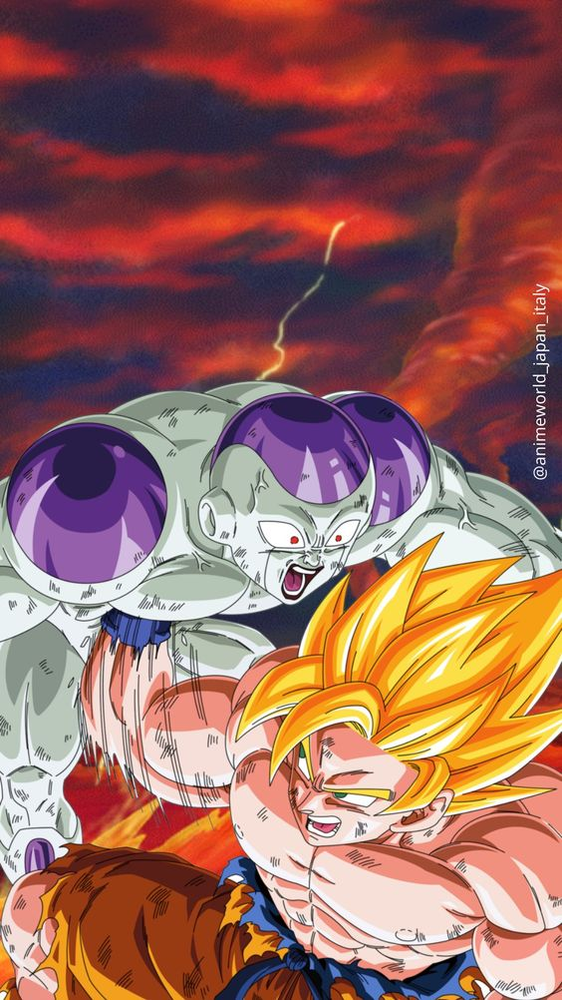
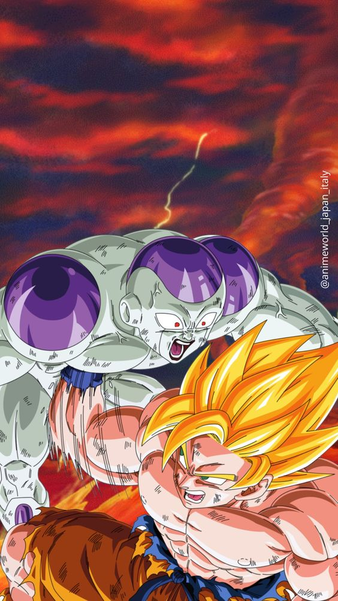

Image 1

Image 2
Image 3
Image 1
Image 2
Image 3
Dragon Ball Z es una serie de manga japonesa producida por Toei Animation. Es el segundo producto de la
franquicia Dragon Ball, se publicó en Weekly Shōnen Jump de 1988 a 1995.
Dragon Ball Z continúa las aventuras de Son Goku en su vida adulta mientras él y sus compañeros
defienden la Tierra contra villanos, incluidos extraterrestres (Vegeta, Freezer), androides (Cell) y
criaturas mágicas (Majin Buu).
Al mismo tiempo, la historia es paralela a la vida de su hijo, Gohan, así como al desarrollo de
sus rivales, Piccolo y Vegeta. La popularidad del anime también ha generado numerosos medios y productos
que representan la mayoría del contenido dentro de la franquicia Dragon Ball.
Desde entonces, a Dragon Ball Z le han seguido dos secuelas: Dragon Ball GT "no canónica", y Dragon Ball
Super "canónica".
 
